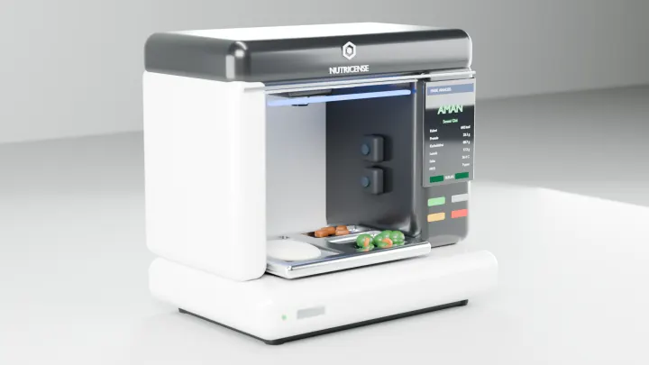
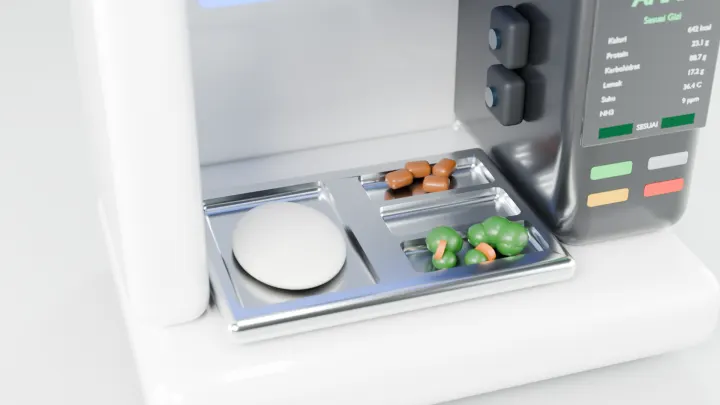
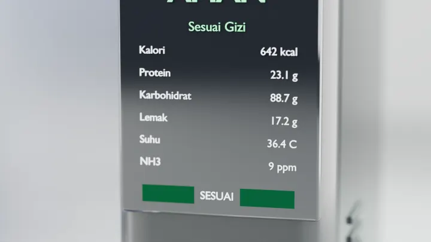
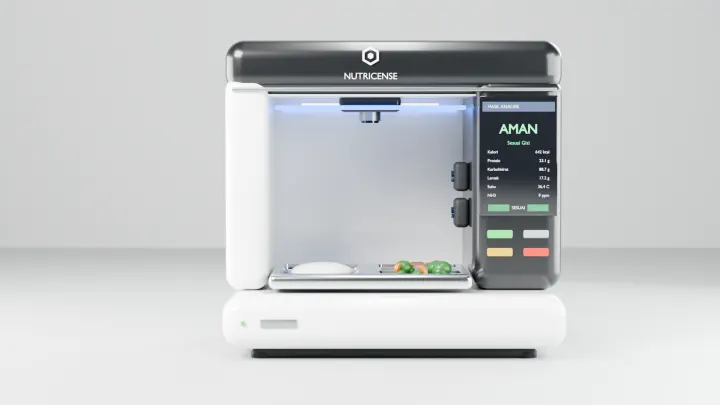
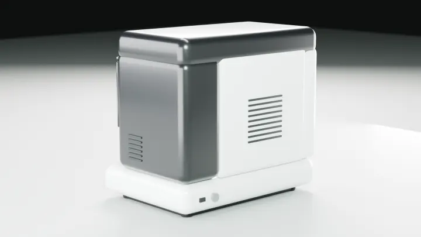

Keamanan tak terukur
Suhu penyajian, keasaman, dan gas pembusukan tidak pernah benar-benar diukur di titik distribusi.
Satu kotak pintar membaca apa yang tak terlihat mata — suhu, keasaman, gas pembusukan, berat, dan kandungan gizi — lalu merangkumnya menjadi satu Food Safety Index, sebelum porsi pertama sampai ke siswa.
Program Makan Bergizi Gratis menyiapkan porsi dalam skala nasional. Satu porsi yang tak terpantau bisa berarti satu kelas yang sakit — dan keputusan “aman disajikan” masih sering bergantung pada tebakan, bukan data.
Suhu penyajian, keasaman, dan gas pembusukan tidak pernah benar-benar diukur di titik distribusi.
Menu direncanakan bergizi, tetapi porsi yang benar-benar sampai ke siswa jarang diverifikasi.
Masalah baru diketahui setelah terjadi, karena laporan mengalir manual dan berlapis.
Pemerintah sulit membandingkan mutu antar-SPPG tanpa ukuran yang seragam dan objektif.
Ompreng masuk, keputusan keluar. Tanpa input manual, tanpa laboratorium.
Nampan MBG diletakkan pada ruang pindai.
Interlock memastikan area tertutup sebelum pemindaian mulai.
Jenis makanan dikenali dan porsinya diestimasi.
Suhu, gas, dan berat terbaca serentak.
Nutrisi dan kesesuaian menu dihitung terhadap rencana SPPG.
AMAN, PERLU CEK, atau TIDAK SESUAI — plus rincian angkanya.
Smart Nutrition Verification System — dirancang untuk dapur SPPG dan ruang distribusi sekolah.
ESP32-CAM (OV2640) mengenali jenis makanan dan mengestimasi porsi.
Mengukur suhu makanan tanpa kontak — higienis dan cepat.
Mendeteksi NH₃, CO₂, dan VOC sebagai penanda pembusukan.
Menimbang porsi hingga 5 kg untuk estimasi nutrisi yang akurat.
Mensterilkan area pindai otomatis setelah setiap penggunaan.
Pemindaian hanya berjalan saat ruang benar-benar tertutup.





Perangkat mengirim, aplikasi menerjemahkan — sesuai kebutuhan tiap peran.
Memindai MBG yang datang, mencocokkannya dengan data SPPG, dan melaporkan masalah.
MasukMengelola menu, bahan, nutrisi, produksi, dan pengiriman ke sekolah binaan.
MasukMemantau sebaran SPPG, tren Food Safety Index, dan kepatuhan menu secara nasional.
MasukMelihat menu harian, kandungan gizinya, dan membaca edukasi gizi yang ringkas.
MasukSetiap pemindaian menghasilkan catatan yang dapat ditelusuri: menu apa, dari dapur mana, pada suhu berapa, dan apakah sesuai rencana. Data itulah yang membuat perbaikan menjadi mungkin.
Tim riset dan pengembangan yang merancang, merakit, dan menguji NC-BOX-09X.

Nilai 0–100 yang meringkas suhu penyajian, keasaman (pH), kelembapan, gas pembusukan, dan kondisi fisik makanan menjadi satu angka keputusan yang mudah dibaca siapa pun.
Tidak. NC-BOX-09X adalah penyaring cepat di titik distribusi — mendeteksi porsi berisiko agar dapat ditindaklanjuti. Uji laboratorium tetap menjadi rujukan akhir.
Perangkat menyimpan hasil pemindaian secara lokal dan menyinkronkannya kembali secara otomatis begitu koneksi pulih.
Sekolah dan dinas terkait. Nutricense hanya mengelola infrastruktur; seluruh data dapat diekspor kapan saja dalam format terbuka.
Di bawah satu menit sejak nampan diletakkan hingga hasil tampil di layar perangkat dan aplikasi.
Coba platform Nutricense dalam mode demo — tidak perlu perangkat keras.